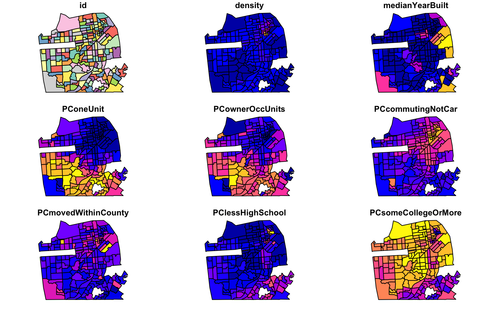
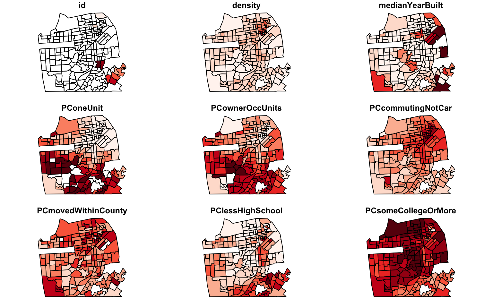
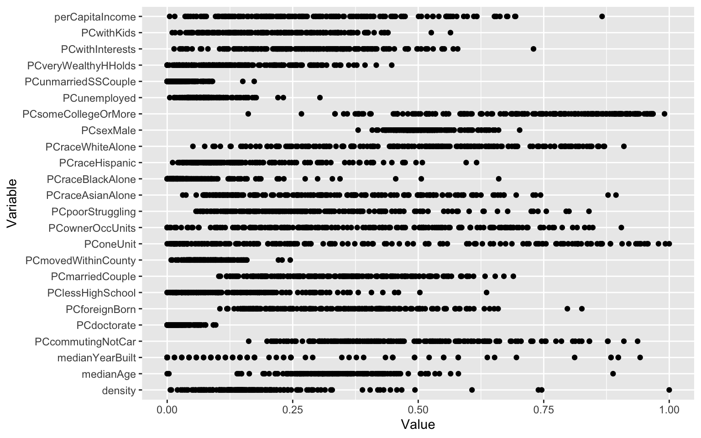
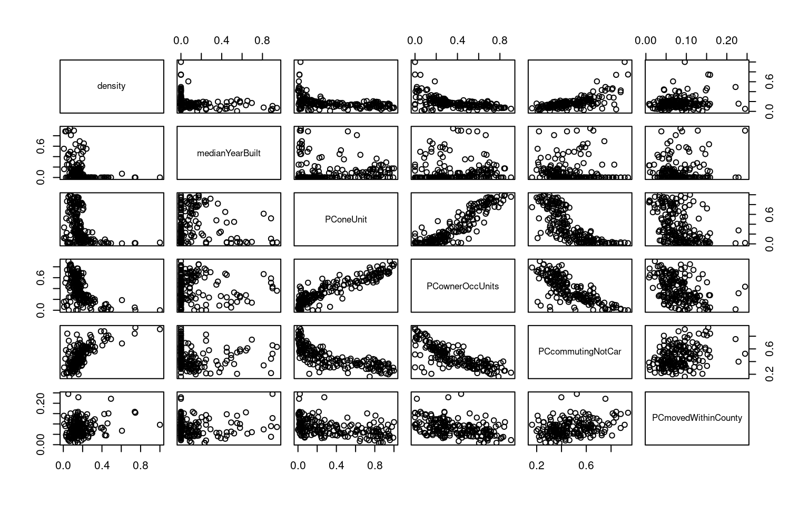
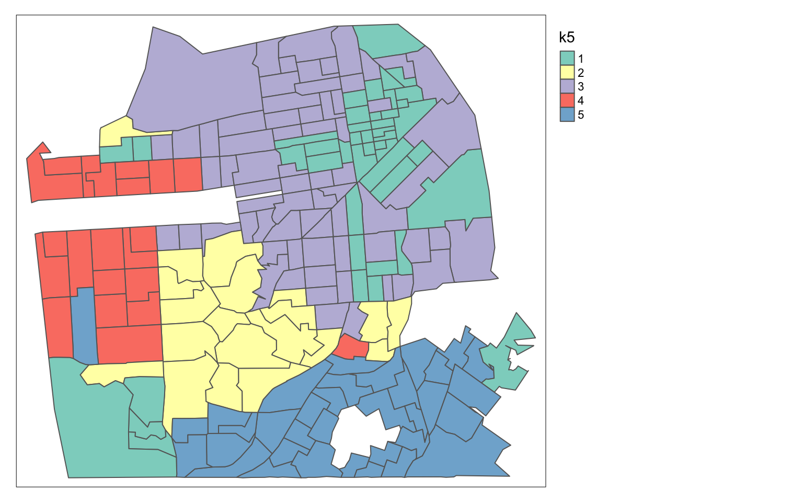
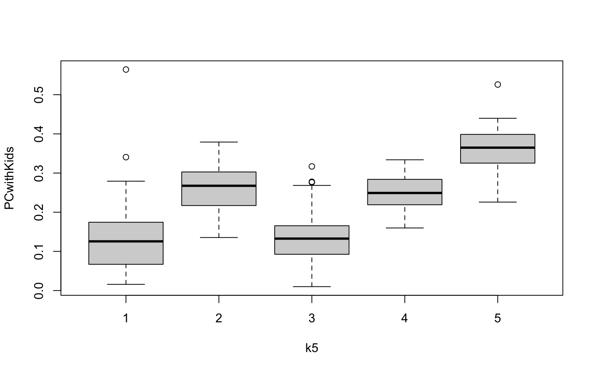
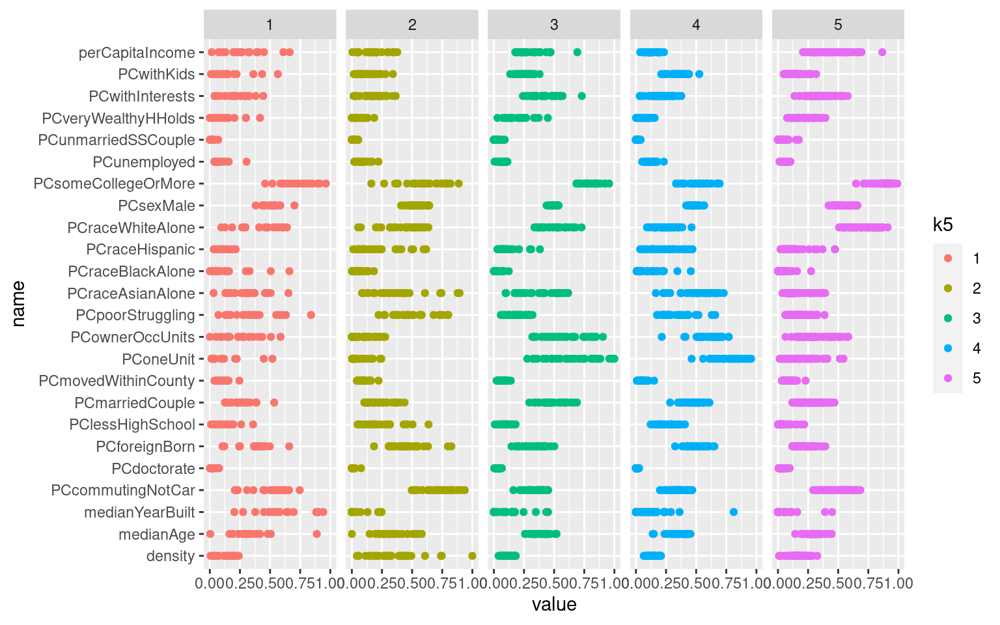

Overview
The lecture material related to this lab is available here:
Meanwhile, here is a quick summary…
Clustering methods segment the observations in a dataset into clusters or classes based on the differences and similarities between them. The idea of clustering analysis is to break the dataset into clusters or classes such that observations in the same class are similar to each other, and different from observations in other classes.
Unfortunately, there is no easy way to define clusters beyond recognising that they are the groups of observations identified by a clustering method! Clustering analysis therefore depends a great deal on the interpretation of an analyst to give it meaning.
What do we mean by ‘similar’ and ‘different’? We extend the basic idea of distance in (two dimensional) space where the distance between observation i and observation j is given by
\[d_{ij}=\sqrt{(x_i-x_j)^2+(y_i-y_j)^2}\] that is the square root of the sum of the squared differences in each coordinate. But now we apply this measure to many data dimensions. So if we have a dataset with (say) 15 attributes, we are in a 15 dimensional data space, and we take the sum of the squared differences in each of the 15 dimensions (i.e. on each variable) between every pair of observations, add them together and take the square root.
Other versions of the basic idea of ‘total difference’ in attribute values are possible.
An important consideration is that all the attributes be rescaled so that the differences in one particular attribute which happens to have large values associated with it don’t ‘drown out’ differences in other variables. For example if one variable is mean income in dollars and has values like 25000 or 50000, while another variable is proportion of children under 5 and has values like 0.04 or 0.05, then if we do not rescale things, the differences in income will swamp any differences in the demographic mix.
A similar concern is that we try not to include lots of strongly correlated variables in the analysis.
Libraries first…
As usual, we need some libraries.
library(sf)
library(tmap)
library(dplyr)Example data
I have prepared an example dataset so we can focus on the clustering itself. For the assignment proper, you are also asked to consider doing some data preparation to select variables and perhaps rescale data values before applying cluster analysis.
The example data are a collection of demographic variables for San Francisco, California from the 2010 census. You can explore the dataset interactively at this website to get a feel for things.
Download the data from this link, and open them in R
sanfran <- st_read("sf_demo.gpkg")## Reading layer `sf_demo' from data source
## `/home/osullid3/Downloads/week5/sf_demo.gpkg' using driver `GPKG'
## Simple feature collection with 189 features and 25 fields
## Geometry type: MULTIPOLYGON
## Dimension: XY
## Bounding box: xmin: -122.5145 ymin: 37.70813 xmax: -122.3679 ymax: 37.81144
## Geodetic CRS: WGS 84If you run summary(sanfran) you’ll see that all these variables have been scaled so that the values range from 0 to 1. We won’t worry for the sake of the example exactly how this has been done for this dataset, but it’s something we need to pay attention to for the assignment dataset.
Make a data only copy
For some of what follows the existence of the geometry attribute causes errors, so it is helpful to make a data-only copy. It is convenient to designate this with .d on the name. Because it is a direct copy the rows of the data table stay in the same order, which is important later when we do the cluster analysis.
sanfran.d <- sanfran %>%
st_drop_geometry() %>%
select(-id) # also remove ID variable since it is just an identifierNote that we remove the id variable because it is a meaningless identifier and should not be included in the clustering analysis.
Getting a feel for the data
This is a complicated dataset, with 24 attributes. We’re likely to be interested in lots of possible relationships and patterns in the data, but it’s difficult to get a handle on things with so much going on. In this section I’ll show you a few possibilities, which you may also wish to try with the assignment data later. We don’t really have the time to cover what is going on with all these plotting methods in detail in this course (but I am happy to answer any questions you may have… post them in the slack workspace so everyone can benefit from the explanations, or if they are very specific, just ask).
Univariate maps
The plot() function will make small maps of 9 or 10 of the variables. If you’d like it to map other than the first 9 or 10, then use select as shown below.
sanfran %>%
plot()## Warning: plotting the first 9 out of 25 attributes; use max.plot = 25 to plot
## all
Note that the colours are a rainbow palette with purple/blue for low values through to orange/yellow for high. You can change the colour palette if you like, but it’s a bit messy, unfortunately… the plot() function is just for a quick look-see not really for final maps.
sanfran %>%
plot(pal = RColorBrewer::brewer.pal(9, "Reds"))## Warning: plotting the first 9 out of 25 attributes; use max.plot = 25 to plot
## all
Keep in mind, the plot() function is only showing you the first few variables, there are 15 more! If any variable is of particular interest map it with tmap in the usual way.
In the short sections that follow, I show some ways to examine all the data, using packages we haven’t worked with before. There isn’t really scope in this course to fully explain these operations, the focus is simply on getting an idea of the data.
Boxplots of all the variables
To run the code in this section you need to install and load the ggplot2 package.
require(ggplot2)## Loading required package: ggplot2require(tidyr)## Loading required package: tidyrWe can use the scatter plot and boxplot functionality in this package to get an overview of all the variables in a single graphic. It’s unfortunately quite a complicated procedure because it involves transforming the data to a ‘long’ format, where each row is the observation id, a variable name, and the corresponding value of that variable. That’s what pivot_longer() is doing.
The code below will show each variable as row of dots. To change to boxplots change the geom_point to geom_boxplot and run it again. It’s best just to copy and paste this code and run it to see the result. If you’d like to understand better how it works, just ask me!
sanfran %>%
st_drop_geometry() %>%
pivot_longer(-id) %>%
ggplot() +
geom_point(aes(x = value, y = name)) +
xlab("Value") +
ylab("Variable")
Scatterplots of all the variables
With 24 variables a full scatterplot matrix is impractical. But we can easily do subsets. Note that we just use plot() but this time on the data only .d version of the dataset that we made (otherwise it will make maps!)
sanfran.d %>%
select(1:6) %>%
plot()
Here, since we are only using this dataset to illustrate how to perform clustering analysis and aren’t interested in its structure as such, we will not spend any more time on this data exploration. In a more realistic situation you would probably want to do so.
Making k-means clusters
Our chosen approach is k-means clustering. The method (or algorithm) is simple:
- Decide on the number of clusters you want, call this k
- Choose k cluster centres
- Assign each observation to its nearest cluster centre
- Calculate the mean centre of each cluster and move the cluster centre accordingly
- Go back to 3 and repeat, until the cluster assignments stop changing
Here’s an illustration of this working to help with following the description above.
It’s important to realise that k-means clustering is non-deterministic, because the choice of initial cluster centres is usually random, and may affect the final assignment arrived at.
So here is how we accomplish this in R.
km <- kmeans(sanfran.d, 5)That’s it! All the results for the chosen number of clusters (specified as 5 in the above example) are now contained in the dataset km. Take a look at it by selecting it from the Environment tab, or just type km at the console:
km## K-means clustering with 5 clusters of sizes 34, 12, 71, 31, 41
##
## Cluster means:
## density medianYearBuilt PConeUnit PCownerOccUnits PCcommutingNotCar
## 1 0.1380531 0.15260017 0.81178892 0.6449458 0.3297185
## 2 0.1444951 0.11231884 0.44396366 0.3441517 0.4235713
## 3 0.1604302 0.07511737 0.18083311 0.3128386 0.5012844
## 4 0.1089185 0.07947639 0.67000867 0.6143581 0.3341577
## 5 0.2987980 0.18522446 0.05861115 0.1204200 0.6691093
## PCmovedWithinCounty PClessHighSchool PCsomeCollegeOrMore PCdoctorate
## 1 0.05102677 0.24111427 0.5316415 0.008865621
## 2 0.06680520 0.23539525 0.5346827 0.007559580
## 3 0.09056067 0.04964294 0.8840446 0.036528743
## 4 0.06935163 0.08995990 0.7971238 0.028151535
## 5 0.10187865 0.19526193 0.6547555 0.015945859
## PCmarriedCouple PCunmarriedSSCouple PCwithKids PCsexMale medianAge
## 1 0.5015789 0.01109483 0.3324023 0.4832578 0.3696467
## 2 0.2955399 0.01716946 0.3742658 0.4999659 0.2286288
## 3 0.2803788 0.03188385 0.1410610 0.5269897 0.2990473
## 4 0.4911939 0.02236769 0.2536621 0.4954321 0.3963689
## 5 0.2365431 0.01352662 0.1191211 0.5219253 0.3559464
## PCraceBlackAlone PCraceAsianAlone PCraceHispanic PCraceWhiteAlone
## 1 0.07257924 0.5480753 0.20229334 0.2472154
## 2 0.21226729 0.1599303 0.39257258 0.3480782
## 3 0.03563461 0.1657718 0.10849974 0.7136635
## 4 0.02320503 0.3862060 0.09980407 0.4997374
## 5 0.07062719 0.3923187 0.14482408 0.4259777
## PCforeignBorn perCapitaIncome PCunemployed PCpoorStruggling PCwithInterests
## 1 0.5116443 0.1401876 0.10287591 0.3063474 0.2217888
## 2 0.3420834 0.1177711 0.14896179 0.4903162 0.1501008
## 3 0.2182757 0.4640983 0.05795774 0.1801782 0.3544504
## 4 0.3320544 0.3055327 0.06581949 0.1871975 0.4093553
## 5 0.4466916 0.1979275 0.08357860 0.4709679 0.1871376
## PCveryWealthyHHolds
## 1 0.07743945
## 2 0.06224154
## 3 0.21976774
## 4 0.18697150
## 5 0.06403698
##
## Clustering vector:
## 1 2 3 4 5 6 7 8 9 10 11 12 13 14 15 16 17 18 19 20
## 5 3 3 3 3 5 5 5 3 5 5 3 5 5 5 5 5 5 5 5
## 21 22 23 24 25 26 27 28 29 30 31 32 33 34 35 36 37 38 39 40
## 5 5 5 5 5 5 5 3 3 3 3 3 3 3 3 3 3 3 3 3
## 41 42 43 44 45 46 47 48 49 50 51 52 53 54 55 56 57 58 59 60
## 3 3 3 3 5 3 3 5 3 5 5 5 3 3 3 3 3 3 3 3
## 61 62 63 64 65 66 67 68 69 70 71 72 73 74 75 76 77 78 79 80
## 3 3 3 3 5 3 5 5 3 5 3 3 3 3 3 3 3 5 5 3
## 81 82 83 84 85 86 87 88 89 90 91 92 93 94 95 96 97 98 99 100
## 3 3 3 3 3 4 4 3 3 3 3 3 2 2 2 3 2 1 1 2
## 101 102 103 104 105 106 107 108 109 110 111 112 113 114 115 116 117 118 119 120
## 2 2 1 2 4 4 3 2 4 2 1 1 1 1 1 1 1 1 1 1
## 121 122 123 124 125 126 127 128 129 130 131 132 133 134 135 136 137 138 139 140
## 1 1 1 1 1 1 1 1 1 3 3 3 3 4 4 4 4 4 4 4
## 141 142 143 144 145 146 147 148 149 150 151 152 153 154 155 156 157 158 159 160
## 4 4 4 1 1 1 1 1 4 4 4 1 1 1 1 4 4 5 5 5
## 161 162 163 164 165 166 167 168 169 170 171 172 173 174 175 176 177 178 179 180
## 4 4 4 1 1 3 3 5 3 5 4 3 4 4 4 4 4 5 4 4
## 181 182 183 184 185 186 187 188 189
## 3 5 2 5 1 5 2 3 3
##
## Within cluster sum of squares by cluster:
## [1] 4.865569 3.590148 13.239683 6.233968 15.216308
## (between_SS / total_SS = 58.2 %)
##
## Available components:
##
## [1] "cluster" "centers" "totss" "withinss" "tot.withinss"
## [6] "betweenss" "size" "iter" "ifault"Most of this is ‘too much information’. The vital information—which observation is in which cluster—is contained in the cluster component, which we can extract and add as a new variable to our dataset like this:
sanfran <- sanfran %>%
mutate(k5 = as.factor(km$cluster))Note how I have given this new variable a name that reflects the number of clusters, and also that I have added it to the spatial dataset. Also, I have added it as a factor which means R will know it is a categorical variable and not a meaningful number.
That means we can map it (your map will look different!)
tm_shape(sanfran) +
tm_polygons(col = 'k5') +
tm_legend(legend.outside = TRUE)
Note how tmap knows to use a categorical palette because k5 is a factor.
Notes
You can run the above code again and you will probably end up with a different (if similar) map. You can also run it specifying a different number of clusters in the kmeans() function.
If you do this you should make sure you give the new variable in the mutate operation a different name, reflecting the number of clusters.
The fact that the results may not always be the same means that interpretation of clusters can be quite challenging.
Interpretation of clusters
The ‘quality’ of a particular clustering solution is dependent on how well we think we can interpret it. In this case, for an unfamiliar setting, you probably can’t do much. Measures of the variance within and between clusters can be used to assess ‘quality’ in a more technical sense and are available from the kmeans object produced by the function.
Here is some code you can use to compare a specific variable across clusters (again, your plot will look different)
boxplot(PCwithKids ~ k5, data = sanfran)
You have to use this code one variable at a time. You can get an overview of which variables are particularly high or low in each cluster from the centers component of the kmeans() results:
km$centers## density medianYearBuilt PConeUnit PCownerOccUnits PCcommutingNotCar
## 1 0.1380531 0.15260017 0.81178892 0.6449458 0.3297185
## 2 0.1444951 0.11231884 0.44396366 0.3441517 0.4235713
## 3 0.1604302 0.07511737 0.18083311 0.3128386 0.5012844
## 4 0.1089185 0.07947639 0.67000867 0.6143581 0.3341577
## 5 0.2987980 0.18522446 0.05861115 0.1204200 0.6691093
## PCmovedWithinCounty PClessHighSchool PCsomeCollegeOrMore PCdoctorate
## 1 0.05102677 0.24111427 0.5316415 0.008865621
## 2 0.06680520 0.23539525 0.5346827 0.007559580
## 3 0.09056067 0.04964294 0.8840446 0.036528743
## 4 0.06935163 0.08995990 0.7971238 0.028151535
## 5 0.10187865 0.19526193 0.6547555 0.015945859
## PCmarriedCouple PCunmarriedSSCouple PCwithKids PCsexMale medianAge
## 1 0.5015789 0.01109483 0.3324023 0.4832578 0.3696467
## 2 0.2955399 0.01716946 0.3742658 0.4999659 0.2286288
## 3 0.2803788 0.03188385 0.1410610 0.5269897 0.2990473
## 4 0.4911939 0.02236769 0.2536621 0.4954321 0.3963689
## 5 0.2365431 0.01352662 0.1191211 0.5219253 0.3559464
## PCraceBlackAlone PCraceAsianAlone PCraceHispanic PCraceWhiteAlone
## 1 0.07257924 0.5480753 0.20229334 0.2472154
## 2 0.21226729 0.1599303 0.39257258 0.3480782
## 3 0.03563461 0.1657718 0.10849974 0.7136635
## 4 0.02320503 0.3862060 0.09980407 0.4997374
## 5 0.07062719 0.3923187 0.14482408 0.4259777
## PCforeignBorn perCapitaIncome PCunemployed PCpoorStruggling PCwithInterests
## 1 0.5116443 0.1401876 0.10287591 0.3063474 0.2217888
## 2 0.3420834 0.1177711 0.14896179 0.4903162 0.1501008
## 3 0.2182757 0.4640983 0.05795774 0.1801782 0.3544504
## 4 0.3320544 0.3055327 0.06581949 0.1871975 0.4093553
## 5 0.4466916 0.1979275 0.08357860 0.4709679 0.1871376
## PCveryWealthyHHolds
## 1 0.07743945
## 2 0.06224154
## 3 0.21976774
## 4 0.18697150
## 5 0.06403698This is quite difficult to interpret (all those numbers) but scanning the information should enable you to spot which cluster has particularly high or low values of particular variables.
For a more visual presentation of all the information we can use some more complicated plotting code, as shown below.
sanfran %>%
select(-id) %>%
st_drop_geometry() %>%
pivot_longer(-k5) %>%
ggplot() +
geom_point(aes(x = value, y = name, colour = k5)) +
facet_wrap(~ k5, nrow = 1)
Here, each column of the plot shows all the values for each variable in a single cluster. Scanning across the data you might be able to identify differences among the clusters, or variables that are particularly high or low in one cluster relative to their values in others.
The assignment data: Wellington region commutes, 2018
OK… you will be relieved to know that the assignment is based on a dataset you probably know a bit more about (and which is actually pretty relevant to thinking about recent lockdowns, disease spread, working from home, and so on), namely data from the 2018 census concerning travel to work and travel to education.
Download the data from this link and save it to your project folder.
Load the data, and make a data-only copy
commutes <- st_read("welly-commutes.gpkg")## Reading layer `welly-commutes' from data source
## `/home/osullid3/Downloads/week5/welly-commutes.gpkg' using driver `GPKG'
## Simple feature collection with 223 features and 24 fields
## Geometry type: MULTIPOLYGON
## Dimension: XY
## Bounding box: xmin: 1735093 ymin: 5390595 xmax: 1908083 ymax: 5532431
## Projected CRS: NZGD2000 / New Zealand Transverse Mercator 2000commutes.d <- commutes %>%
st_drop_geometry() %>%
select(-id)These data are a subset of Statistics New Zealand’s 2018 commuter data which they recently made available for the There and back again visualization challenge. I entered this web-application in that contest, and would encourage you to explore it to get a feel for the kind of information contained in these data. I like my visualization even though I didn’t win the contest. Here is the winning entry.
Specifically the variables in this dataset are as follows:
| name | meaning |
|---|---|
pop |
usually resident population |
work |
total number working in the area (whether they live there or not) |
study |
total number studying in the area (whether they live there or not) |
w_home |
people working at home |
w_loc_car |
people travelling to work by car within the area (i.e. they live and work in the area) |
w_loc_pt |
people travelling to work by public transport within the area |
w_loc_active |
people travelling to work by an active mode (walking, biking etc) within the area |
The other variables are similar, but with s_ indicating the total refers to study not work (this includes school age children); _in_ indicating the trip is from some other area into this one, and _out_ indicating the trip is from this local area out to some other local area.
So, for example an area like Wellington CBD which has many inbound work trips will have high values of w_in_ variables while Kelburn around the university will have a high value for s_in_ variables. An area with not much employment where most people commute elsewhere to work will have high values of the w_out_ variables.
If you are unsure about any of this then ask.
Note that all the attributes are provided as total counts. You may decide that you need to change variables to proportions or percentages of totals, but this can get quite complicated rather quickly, so consider your options carefully. To begin with you may find it easier simply to run clustering analysis to arrive at results and depending on interpretation then later return to do some data tidying.
I advise you to make some maps to get a feel for the data before attempting to do cluster analysis.
Assignment 3 Cluster analysis of commuting data
This assignment is quite open-ended. Here is the description:
Run a cluster analysis of the provided Wellington commuter data and map the resulting clusters. Provide a short write up explaining how you did the analysis (not the commands used, focus instead on the number of clusters, variables included or excluded). Explain what you think the results tell us about the overall geographical structure of the Wellington Region. The overall write up should not be more than 2-3 pages (with this length including maps and diagrams if any).
Things to consider
Here are a few things to be thinking about while working on this assignment.
- How many clusters make sense? How many different kinds of ‘place’ are there in a region like Wellington. Think about how you expect the region to break down into different kinds of place based specifically on commuting patterns.
- Try to provide verbal descriptions of the clusters you identify so that a reader can make sense of them without studying tables of data or complex charts.
- Keep in mind that clusters are a categorical data type which has implications for the
styleto use when mapping them. - Consider if you want to retain all the supplied variables in the analysis. Maybe some are redundant, or you can get a clearer result by removing a few (but not so many that it no longer makes sense to cluster the remaining variables).
- Consider if it is appropriate to rescale variables so they are expressed as proportions or percentages (you don’t have to do this to get a good mark, but you should still think about it and explain your choice with respect to this option.)
Assessment
Assessment will be based on the maps and any diagrams included, and an overall evaluation of your explanation of the analysis carried out and the discussion of what it shows. Pay equal attention to the quality of any maps or figures you include, and to the written discussion.
Submission
Prepare a PDF document that meets the requirements set out above. The whole document should only need to be 2-3 pages (maximum). Submit a PDF file to the dropbox provided on Blackboard. The due date is the end of the day on the due date indicated on the course schedule page..